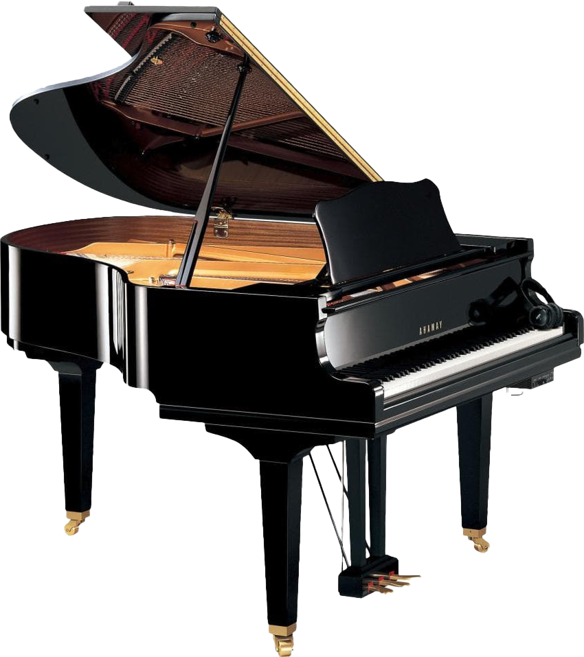

01 / Keys
Piano

고요한 여백에서 태어나는 가장 깊은 울림.
피아노는 야마하가 소리를 대하는 태도의 원형입니다. 1900년 첫 업라이트 이후, 한 세기 넘게 이어온 장인의 감각이 건반 하나하나에 담깁니다.
88개의 건반은 단순한 장치가 아니라, 연주자의 호흡을 소리로 옮기는 통로입니다. 정밀하게 조율된 액션은 가장 여린 터치와 가장 강한 타건 사이의 모든 뉘앙스를 그대로 전합니다. 그렇게 야마하 피아노는 도구가 아니라, 연주자의 동료가 됩니다.
Specification
- 건반
- 88건반 · 7¼ 옥타브
- 액션
- 정밀 그랜드 액션 — 가장 여린 터치까지 반응
- 음색
- 풍부한 배음과 긴 서스테인, 명료한 어택
- 향판
- 셀렉티드 스프루스 솔리드 향판
- 계보
- 1900 첫 업라이트 → CFX 콘서트 그랜드로 이어진 장인 계보
Make Waves